AI탭
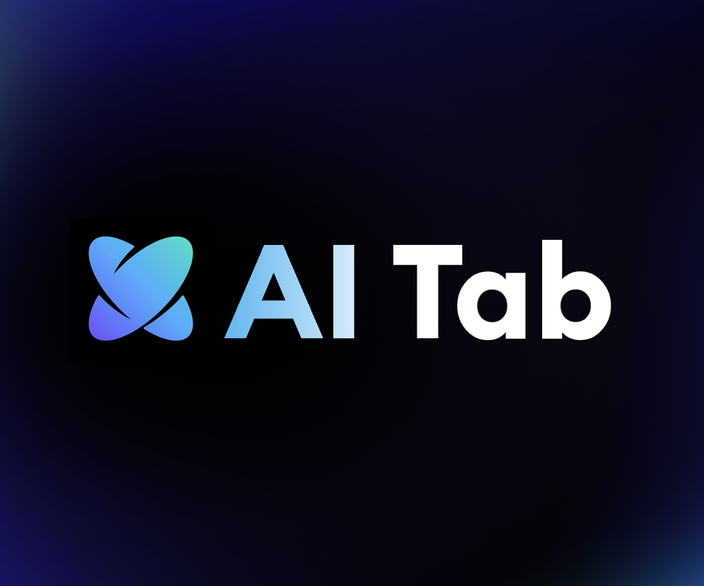
search.naver.com
네이버 AI 탭 바로 써보기
네이버 통합검색의 'AI 탭'으로 바로 이동합니다. 대화하듯 질문하면 맥락을 이해해 답과 실행을 제안합니다.
바로 써보기 →네이버 AI 검색 디자인 총괄 · 김재엽
현재 네이버(NAVER)의 AI 검색 설계 디자인 총괄이자 홍익대학교 산업디자인과 부교수로 재직 중입니다. 네이버에서는 생성형 AI 검색 'AI 브리핑'과 최근 런칭한 'AI 탭'을 포함한 지능형 서비스의 성공적인 출시를 이끌었으며, 내부 디자인 프로세스를 AI 네이티브 워크플로우로 혁신하여 조직의 창작 체계를 새롭게 구축하는 작업에 주력하고 있습니다.
📄 레쥬메 보기
네이버 통합검색의 'AI 탭'으로 바로 이동합니다. 대화하듯 질문하면 맥락을 이해해 답과 실행을 제안합니다.
바로 써보기 →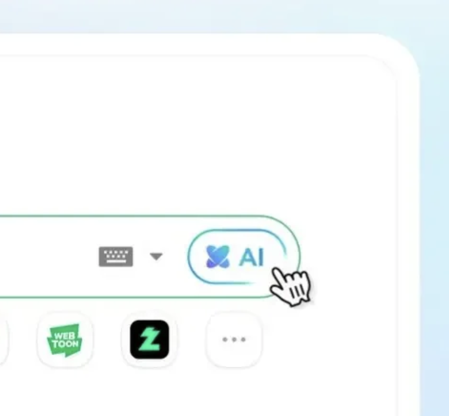
베타 출시 2개월 만에 누적 사용자 400만 명을 달성한 AI탭을 전체 사용자에게 정식 출시. 장소 탐색부터 실시간 예약까지 실행형 AI 에이전트로 기능을 확장했다.
더보기 →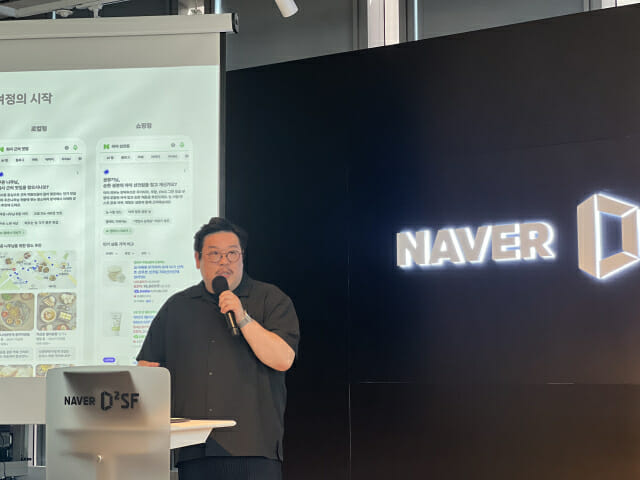
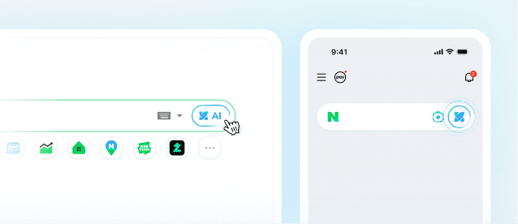
네이버가 통합검색에 별도의 'AI 탭'을 신설해 대화형 검색 경험을 제공한다. 질문 맥락을 이해해 답과 실행을 함께 제안하는 방향으로 검색창이 개편된다.
더보기 →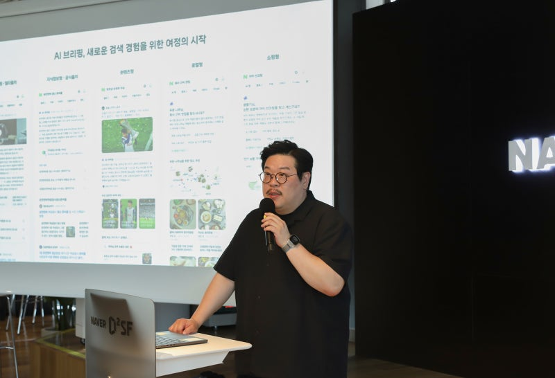
김재엽 검색플랫폼 리더가 기자간담회에서 발표한 네이버의 AI 검색 전략. 통합검색에 'AI 탭'을 신설해 예약·구매·결제까지 한 번에 처리하고, 향후 '통합 에이전트'로 확장한다.
더보기 →팀네이버 컨퍼런스 DAN 24 'Creative Highlight Session #2'. 생성형 AI가 네이버 검색 인터페이스를 어떻게 확장하는지를 다룬 발표.
YouTube에서 열기 →네이버 AI 탭으로 대화하듯 검색하고 예약·결제까지 이어지는 모습을 다룬 뉴스 영상.
YouTube에서 열기 →AI가 디자인 작업에서 단순한 도구를 넘어 협업 파트너로 자리 잡아가는 현장을 조명한다. 디자인 프로세스가 AI와 함께 어떻게 바뀌는지를 다룬 기사.
더보기 →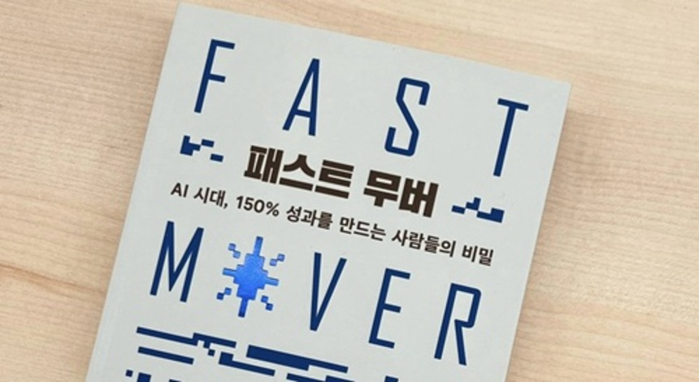
김재엽 교수의 저서 '패스트 무버'를 다룬 서평. AI 시대에 앞서 나가는 사람들이 갖춘 세 가지 핵심 역량을 짚는다.
더보기 →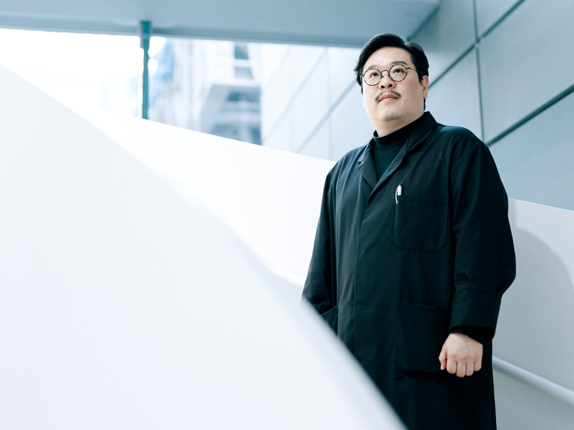
네이버 서치 'Search Creative X' 책임 리더 김재엽 인터뷰 ①. 긴 문장 검색을 이해해 여러 검색을 자동 수행·종합하는 AI 검색을 위해, 기존 대화형 UI를 '대화형 검색 인터페이스'로 재정의하고 정보 구조와 템플릿을 최적화한 과정을 다룬다.
더보기 →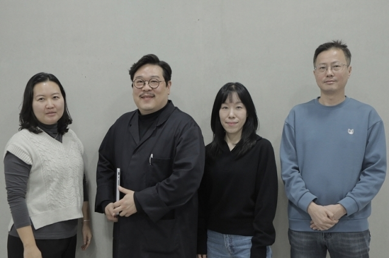
네이버가 AI 검색을 준비하며 왜 '디자인 시스템'부터 구축했는지를 다룬다. 일관된 검색 경험을 위한 디자인 기반 설계 이야기.
더보기 →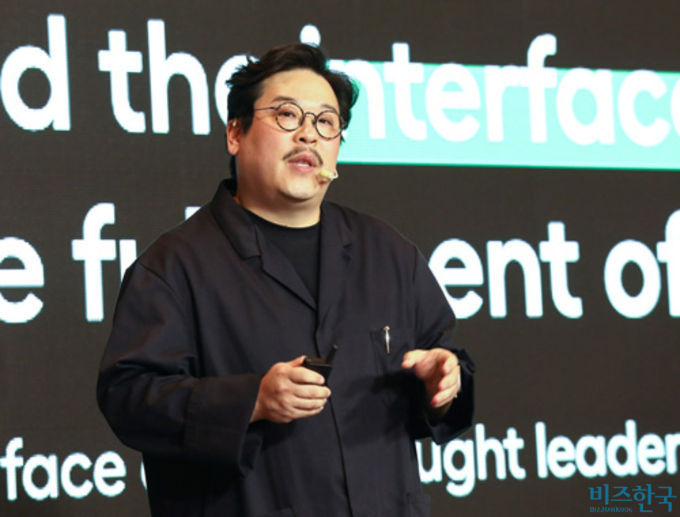
브랜드비즈 컨퍼런스(BbCONF)에서 김재엽 네이버 디렉터가 "AI 고도화로 디자이너의 역할이 달라질 것"이라 전망했다. 사진이 현대미술을 바꾼 것처럼 AI도 디자이너의 역할을 바꿀 것이며, 대화형 검색 'cue:'처럼 인터페이스가 더 자연스러워질 것이라 설명했다.
더보기 →김재엽 책임리더가 밝힌 네이버 AI 검색의 방향. 사용자의 트렌드와 취향을 반영한 검색 경험을 제공하겠다는 구상을 담았다.
더보기 →네이버가 홍익대 김재엽 교수를 책임리더로 영입해 AI 검색 '에어서치'의 사용자경험(UX) 개선을 추진한다. 삼성전자·노키아·마이크로소프트 등에서 경험을 쌓은 UX 전문가로, 개인 맞춤형 검색 고도화에 역량을 집중한다.
더보기 →Cue:를 만든 핵심 인물들이 직접 들려주는 생성형 AI 검색의 기획 의도와 비하인드 스토리.
YouTube에서 열기 →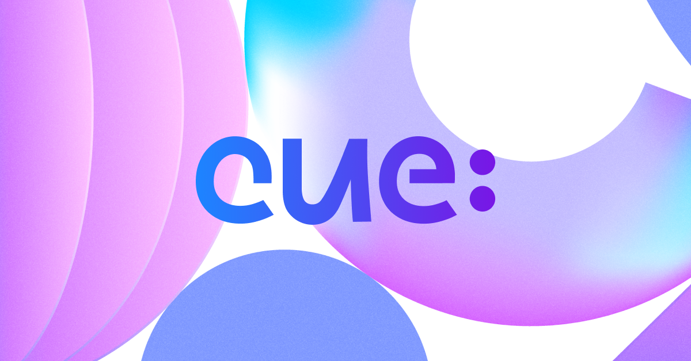
2022년 네이버 서치 콜리퀴움 발표. 검색 설계에서 '사용자 중심 어프로치(User-Centered Approach)'가 어떻게 적용되는지를 다룬다.
네이버 TV에서 열기 →마이크로소프트의 AI 어시스턴트 'Cortana'를 소개하는 영상. 음성 기반 어시스턴트의 초기 비전을 보여준다.
YouTube에서 열기 →윈도우 10의 AI 어시스턴트 Cortana로 일정과 할 일을 관리하는 사용 경험을 소개하는 영상.
YouTube에서 열기 →노키아 루미아 920의 공식 TVC. 윈도우폰 OS의 디자인 경험을 보여주는 영상.
YouTube에서 열기 →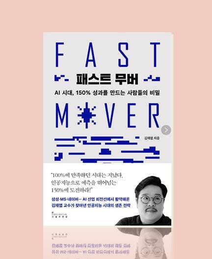
삼성·MS·네이버 등 AI 산업 최전선에서 활약해온 김재엽 교수가 찾아낸 인공지능 시대의 생존 전략. '100%에 만족하던 시대는 지났다 — 150%에 도전하라'는 메시지를 담은 저서.
교보문고에서 보기 →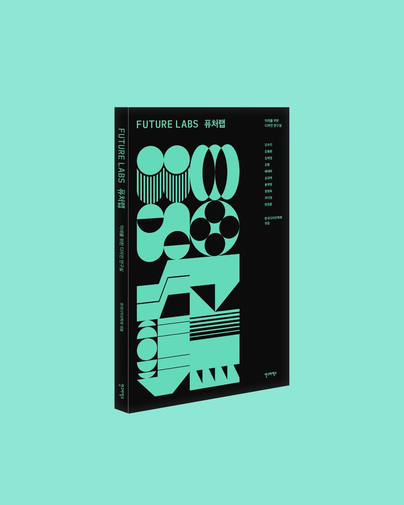
미래를 위한 디자인 연구실(Future Lab)의 이야기를 담은 책. 디자인이 미래를 어떻게 탐구하고 만들어가는지를 다룬다.
교보문고에서 보기 →